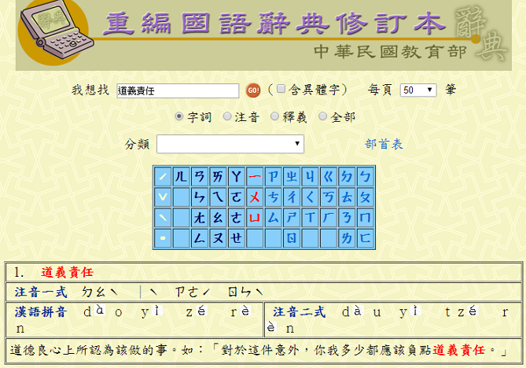
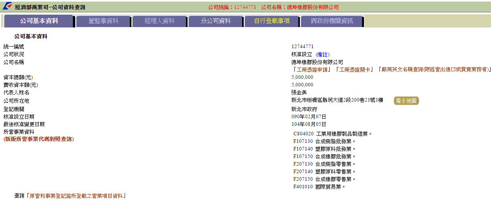
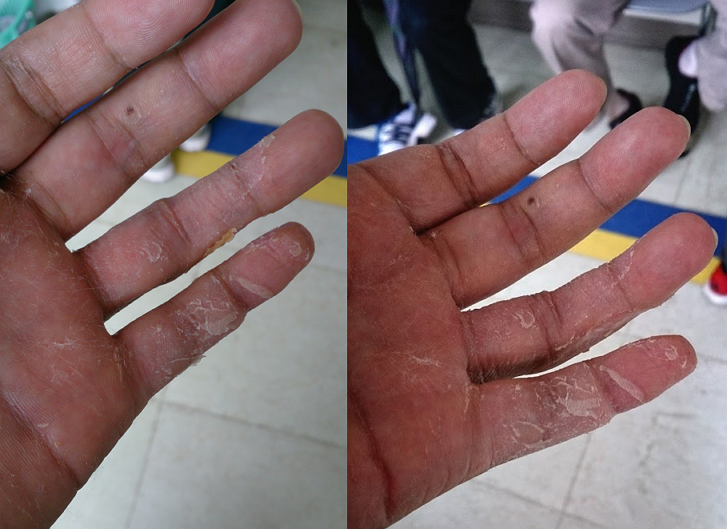

車禍調解資訊
2015/08/19 發生車禍
2015/08/19~10/09 來電一次
2015/10/08 第一次調解 失敗
2015/10 來電砍金額
2015/11/20 談判回覆
目前仍於復健中
如照片所示
真的撞很大力把200公斤撞飛旋轉180度、機車龍頭組件幾乎全歪、中柱撞歪、骨折
沒有煞車
工作上就是靠手指與頭腦。
車禍後 8/20、8/21、8/22 均有課程受影響(要動手寫程式&回診)。
下半年為公司忙季，無法安心靜養，公司要求要上班，但一隻手幾乎無法寫程式，但工作還是陸續增加，工作壓力大，與公司有爭執。
私人時間還有在接案，按原定時程9月開始交付測試，受傷後無法按時程交付客戶，名聲與收入均受影響。
張小姐，你連自己的車有沒有保第三責任險都搞不清楚了，我真的不曉得你怎麼好意思在那跟我爭論我有沒有煞車。
再說，我有沒有煞車根本不重要，是你逆向加上車速過快撞我造成我手指骨折，我有煞沒煞被你撞都是差不多結果。
還跟我說你也受傷擦擦藥就好了啊，要賠這麼多嗎? 你怎不怪自己為什麼要騎那麼快?
再請問你，你有骨折嗎?你有對生活造成影響嗎?你收入有影響嗎?
今天我平白無故就被你撞斷骨頭，還要跟你辯這些，你覺得我有感覺到你的歉意嗎?
如果沒有同理心，那嘴巴講講抱歉的表面工夫，聽起來更刺耳更讓人吞不下這口怨氣。
沒有人願意拿自己的健康換金錢，斷根指頭換這點錢也不會變有錢人我寧可不要，但你一個肇事者能做什麼?你也只有賠錢來補償對我的傷害。
張女士的兒子，我猜應該是姓林吧?我覺得你們也很厲害，每次都讓我氣到抓狂。
你說你願意盡點道義責任，你先看看什麼叫道義責任。
所以你的意思是你良心上過得去?
在我看來張女士是必須負全責，把撞壞的東西復原、賠償我收入的損失、對我身體上傷害與不便的慰問金，已經是基本中的基本了，我也沒要求很誇張的金額。
但是今天你說我條列清楚的東西你沒仔細看，我的合約你也看不懂，先生，今天不是你說一句看不懂就可以跳過吧?
再說你合約看不懂，我就很納悶你家公司怎麼開得成?你接單都不用合約?
再說你敢說自己很有誠意?請問車禍兩個月內只打了一通電話知道我骨折了，知道後請問你們有什麼作為或表示?
沒有!!什麼都沒有!!第二個月的時候你媽也只問了我修車多少錢，你們根本就打算修車錢付一付就當沒撞傷我就要和解吧。
再來你電話一來就要總金額就劈一半，拜託，我和解金也只占一點而已，大部分都是修車跟收入損失你也劈得下去?
還說你很有誠意，我整理的資料也沒在看，然後拜託請不要把本來就該做的事講成是你的誠意好嗎?
好像我被撞算我倒楣，我願意陪你一半就已經誠意十足了。
你說妳媽只是家庭主婦?
那這是我眼花?在你打電話來之前我就知道了。
你不要跟我說妳媽掛名不管事而已，如果法官信你這套再來跟我說。
我真的不爽你們的態度跟處理方式。
今天你們有錯在先，還造成傷害，我醫療期間你們也根本沒表示與行動。
既然沒誠意你就賠的乾脆點，賠償也不乾不脆，言談也沒誠意信用可言。
你也太誇張，總金額砍個一兩成我也就算了，一砍就砍一半，我說原金額給你分期，你又說不是分期的問題 那就是不想付啊，看到你家那500萬的公司，就格外諷刺，我雖然只是上班族而已，但自尊還是有的。
你現在要再跟我重談金額來不及了，現在我連復健時間都要加下去。
我每次只要手痛，再想到你們的態度，就格外生氣，為什麼我是被害者又拿不到自己損失的，還要受這種鳥氣。
還要我跟你妥協?你覺得這口氣我吞的下去?
人爭一口氣，佛爭一炷香。
坦白說，我一點都不擔心要花時間陪你們跑法院，事實上我也特地請假跑過了。
刑事傷害告訴追溯期是六個月，2015/8/19撞傷我。
你們那種態度也不用再跟我談了，看什麼時間直接賠償就簽和解吧，我是不希望拖過跨年。
你們決定好了就跟我說時間，總計12萬元整的和解金(我剛前面說了)。
若是還覺得我亂開，麻煩我列的清單拿出來仔細看，再加上我復建預計六個約的復健。
要怪就怪自己為什麼在巷子內騎那麼快，快到把人撞骨折，又偏偏撞斷工程師的手指。
三個月來我看醫生浪費多少時間、耽誤多少工作、後續復健、手指傷痛這些你惹出來的麻煩，確要我付出成本
如果你們還是一副需要賠這麼多嗎?是靠受傷在賺錢的、有傷這麼重嗎?之類的論調那你們就還是只顧慮到自己，根本沒理會我平白無故被撞是怎樣心情
附上拆石膏照跟影片，若還是覺得我活受三個月的罪很好賺的話，那我也接受你讓張女士以時速70無煞車撞撞看 (可能還不夠快，要能撞飛200公斤可能還不夠，還要能把150的骨架撞歪)，看要斷手還斷腳後再跟我說沒那麼嚴重啦，斷根手而已，道義上補償一下，我就服氣算扯平。
我不推崇以暴制暴喔，只是我覺得你們講話都不負責任，讓你可以體驗一下我的感受而已。
治療兩個月拆石膏時 手指水腫，捆綁變形，無力抖動
治療兩個月拆石膏時 手指水腫，捆綁變形，無力抖動